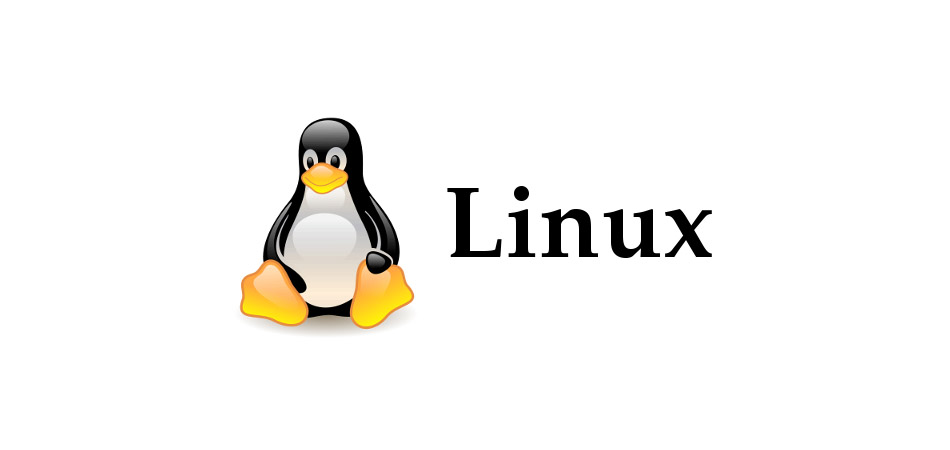

Основи GNU/Linux
1. Коротка інформація про операційну систему GNU/Linux
GNU/Linux — це вільна операційна система, заснована на ядрі Linux та компонентах проєкту GNU. Вона надає широкий спектр можливостей для розробників, системних адміністраторів і звичайних користувачів завдяки гнучкості, безпеці та відкритому коду. Linux є популярною операційною системою на серверах, мобільних пристроях (як Android), а також на персональних комп'ютерах.
2. Найбільш популярні дистрибутиви GNU/Linux
- Ubuntu: Зручний для новачків дистрибутив, популярний серед користувачів десктопів.
- Debian: Один із найстаріших дистрибутивів, відомий своєю стабільністю та надійністю.
- Fedora: Дистрибутив, орієнтований на новітні технології та розробку.
- Arch Linux: Гнучкий дистрибутив, який надає повний контроль користувачеві.
- CentOS: Відповідає корпоративним вимогам, використовується на серверах.
- Linux Mint: Зручний дистрибутив для переходу з Windows на Linux.
- OpenSUSE: Пропонує різноманітні інструменти для адміністрування та розробки.
3. Приклади команд роботи в Linux CLI
-
pwd— Показує поточну директорію.pwd
-
echo— Виводить текст або змінні в термінал.echo "Привіт, світ!"
-
ls— Виводить список файлів у поточній директорії.ls
-
cd— Змінює поточну директорію.cd /home/user
-
touch— Створює новий файл.touch newfile.txt
-
mkdir— Створює нову директорію.mkdir newfolder
-
cp— Копіює файли.cp file.txt /home/user/
-
mv— Переміщує або перейменовує файли.mv file.txt newfile.txt
-
rm— Видаляє файли.rm file.txt
-
history— Показує історію команд.history
4. BASH-сценарій для авторизації
Нижче наведений простий BASH-скрипт, що імітує авторизацію користувача в текстовому режимі:
#!/bin/bash
# Скрипт авторизації користувача
username="user"
password="password"
echo "Введіть логін:"
read input_user
echo "Введіть пароль:"
read -s input_pass
if [[ "$input_user" == "$username" && "$input_pass" == "$password" ]]; then
echo "Авторизація успішна!"
else
echo "Неправильний логін або пароль!"
fi